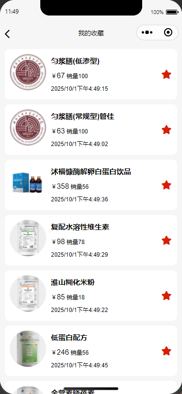

favorites: Map(2)
[[Entries]]
0: {"c8872b6468ad21f801f386287db82346" => "2025/9/30上午12:52:54"}
1: {"c8872b6468ad21f801f386287db82605" => "2025/10/1下午1:39:34"}
size: 2
onLoad(options) {
wx.showLoading({
title: 'Loading...',
})
const carts = app.globalData.carts
const products = app.globalData.products
const favorites = app.globalData.favorites
const product = products.find(item => item._id == options._id)
const cart = carts.find(item => item._id == options._id)
product.quantity = cart ? cart.quantity : 1
let isFavor = favorites.get(product._id) ? true : false
this.setData({
product,
carts,
isFavor
})
wx.hideLoading()
}
toggleFavorite() {
let isFavor = this.data.isFavor
const product = this.data.product
const favorites = app.globalData.favorites
isFavor = !isFavor
if (isFavor) {
favorites.set(product._id, new Date().toLocaleString())
wx.showToast({
title: '收藏成功',
})
} else {
favorites.delete(product._id)
wx.showToast({
title: '收藏取消',
})
}
this.setData({
isFavor
})
app.globalData.favorites = favorites
wx.setStorageSync('favorites', Object.fromEntries(favorites))
}
onLoad(options) {
this.loadFavor()
}
cancelFavorite(e) {
wx.showModal({
title: '温馨提示',
content: '确定要取消收藏吗',
complete: (res) => {
if (res.confirm) {
const favorites = app.globalData.favorites
const _id = e.currentTarget.dataset._id;
favorites.delete(_id)
app.globalData.favorites = favorites
wx.setStorageSync('favorites', Object.fromEntries(favorites))
this.loadFavor()
wx.showToast({
title: '收藏取消',
})
}
}
})
}
<view class="card" wx:for='{{products}}' wx:key="id">
<navigator class="card-item" url="../../details/details?_id={{item._id}}" open-type="redirect">
<product product='{{item}}'></product>
<view catch:tap="cancelFavorite" data-_id='{{item._id}}'>
<text class="iconfont icon-favorites-fill txt-xl warn"></text>
</view>
</navigator>
</view>
onPullDownRefresh() {
this.loadFavor()
}
loadFavor() {
wx.showLoading({
title: 'Loading...',
})
const favorites = app.globalData.favorites
const products = app.globalData.products.filter(item => favorites.get(item._id))
products.map(item => item.createdTime = favorites.get(item._id))
products.reverse()
this.setData({
products
})
wx.hideLoading();
wx.stopPullDownRefresh();
}
